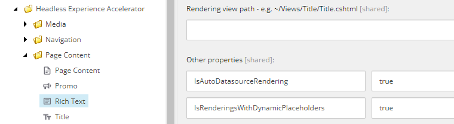

Data sources
Learn more about how renderings relate to data source items.
SXA comes with a library of predefined renderings to ensure modular component based design. Most SXA renderings are designed for reusability and pull data from data source items. This means that the content they display is not bound to the page on which they appear but is stored in data source items. When you add a rendering to a page, in the Associated Content dialog you can select an existing or create a new data source item.
The following fields determine how a rendering relates to its data source item:
Datasource Location – specify where the user is allowed to look for the data source (sitcore/Layout/Renderings/Feature/Headless Experience Accelerator/[rendering]/
Datasource Template – specify the types of data sources users can create.
Data source – specifies a data source item.
This topic describes how renderings use data source items.
Note
To locate the Datasource Location and Datasource Template fields, in the Content Editor, navigate to sitecore/Layout/Renderings/Feature/Headless Experience, select a rendering and scroll down to the Editor Options section. The Data source field is in the Data section.
When building a new rendering, the Sitecore developer must decide which category a new custom rendering falls into, so the rendering can be properly configured.
Renderings without data source items do not store their own data, for example, the Navigation renderings. They are static and not editable by content authors.
Field | Value |
|---|---|
Datasource Location | Leave empty. |
Datasource Template | Leave empty. |
Data source | Leave empty. |
By default, renderings with an optional data source item read data from the current page, but can be set to read information from the data source item instead. For example, the Title and Page Content renderings.
Field | Value |
|---|---|
Datasource Location | Leave empty |
Datasource Template | Leave empty |
Data source | Leave empty or reference a data source item |
Renderings with a single data source item always use one data source that is unique for a specific platform, site collection, or site. For example, the Promo rendering.
Field | Value |
|---|---|
Datasource Location | Leave empty |
Datasource Template | Leave empty |
Data source | Data source item reference |
Renderings with a reusable data source enable the content editor to create or select a data source item.
Field | Value |
|---|---|
Datasource Location | Reference to the item that groups rendering data source items. |
Datasource Template | Reference to the data source item template. |
Data source | Leave empty. |
Note
To select additional templates, navigate to the rendering sitecore/Layout/Renderings/Feature/Headless Experience Accelerator and, in the Additional compatible templates field, click the template and click the right arrow to move it to the list of selected templates.
Renderings that can use content from the current page have an option to select the page as a data source. When the Can select Page as a data source box is selected, it lets you use a page as a data source. This option is available for renderings that take content from the current page such as Page Content.
For example, navigate to sitecore/Layout/Renderings/Feature/Headless Experience Accelerator/Page Content/Page Content and, in the Experience Accelerator section, select the Can select Page as a data source check box.
Renderings with an automatically generated data source store data and create the data source item when a content editor places the rendering on the page. For example, the Rich Text, Image, and Plain HTML renderings.
Field | Value |
|---|---|
Datasource Location | Reference to the item that groups rendering data source items. |
Datasource Template | Reference to the data source item template. |
Data source | Leave empty. |
Other Properties | IsAutoDatasourceRendering - set to true for renderings for which a data source is automatically created after adding that rendering to a page:  NoteThe |
We recommend that you do not rename local data source items (<Page>/Data) manually. Changing the name of a local data source item can break the link with the component (because the links are stored as relative paths).
If you do rename a local data source item, you must reselect the item in the data source selection dialog.
Alternatively, you can convert the data source references to GUIDs before you rename them. After you do that, it is safe to rename them.